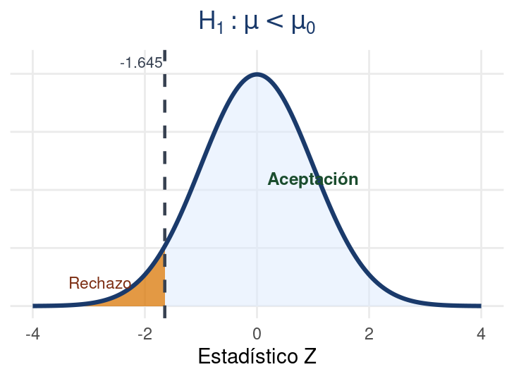

Bioestadística Fundamental
Departamento de Estadı́stica, Sede Bogotá
Contenido
Parte I: Fundamentos
- Introducción a las pruebas de hipótesis.
- Conceptos básicos y terminología.
- Hipótesis nula e hipótesis alternativa.
- Tipos de pruebas de hipótesis.
- Estadístico de prueba y valor-p.
Parte II: Procedimiento
- Prueba de hipótesis para la media.
- Prueba de hipótesis para la proporción.
- Criterios de decisión.
- Criterio del intervalo de confianza.
- Ejemplos y código en R.
- Taller.
Parte III: Métodos y varianza
- Lema de Neyman-Pearson.
- Razón de verosimilitud (LRT).
- Pruebas UI e IU.
- Prueba para la varianza (χ²).
Introducción a las Pruebas de Hipótesis
Las pruebas de hipótesis son herramientas fundamentales de la inferencia estadística que permiten tomar decisiones sobre una población a partir de información muestral.
Prueba de Hipótesis Estadística
Definición
Una prueba de hipótesis es un procedimiento estadístico que permite evaluar afirmaciones sobre una población utilizando información obtenida de una muestra.
Su objetivo es determinar, con base en la evidencia muestral, si existe suficiente información para aceptar o rechazar una afirmación acerca de un parámetro poblacional.
Para desarrollar una prueba de hipótesis es necesario comprender algunos conceptos fundamentales y la terminología utilizada en inferencia estadística.
Conceptos básicos y terminología
Hipótesis nula \((H_0)\)
Es la afirmación inicial que se asume verdadera hasta encontrar evidencia en contra.
Hipótesis alternativa \((H_1)\)
Es la afirmación que plantea una diferencia o efecto.
Nivel de significancia \((\alpha)\)
Representa el nivel de riesgo aceptado al tomar una decisión.
Región de aceptación y rechazo
Determina cuándo se rechaza o no la hipótesis nula.
Otros conceptos importantes
Estadístico de prueba
Es el valor calculado a partir de la muestra y utilizado para tomar la decisión estadística.
Valor-p
Indica qué tan compatible son los datos observados con la hipótesis nula.
Prueba unilateral
Evalúa si el parámetro es mayor o menor que un valor específico.
Prueba bilateral
Evalúa si el parámetro es diferente de un valor específico.
Hipótesis nula e hipótesis alternativa
Toda prueba de hipótesis se construye a partir de dos afirmaciones opuestas sobre un parámetro poblacional.
Hipótesis nula
\[ H_0 \]
Representa la afirmación inicial o situación de referencia.
Se asume verdadera mientras no exista evidencia suficiente para rechazarla.
Hipótesis alternativa
\[ H_1 \]
Representa la afirmación contraria a la hipótesis nula y refleja el efecto, diferencia o cambio que se desea demostrar.
Tipos de pruebas de hipótesis
Las pruebas de hipótesis se clasifican según la dirección planteada en la hipótesis alternativa:
Prueba de dos colas
\[ H_0:\mu = \mu_0 \]
\[ \color{#166534}{H_1:\mu \neq \mu_0} \]
Se utiliza cuando se desea verificar si existe cualquier diferencia respecto al valor planteado.
Prueba de cola derecha
\[ H_0:\mu \leq \mu_0 \]
\[ \color{#1d4ed8}{H_1:\mu > \mu_0} \]
Se aplica cuando se busca evidencia de un aumento respecto al valor de referencia.
Prueba de cola izquierda
\[ H_0:\mu \geq \mu_0 \]
\[ \color{#c2410c}{H_1:\mu < \mu_0} \]
Se utiliza cuando se desea comprobar una disminución respecto al valor planteado.
Ejemplo
Prueba de dos colas
Un laboratorio certifica que el contenido de proteína en un concentrado bovino es de 18% por kilogramo.
\[H_0: \mu = 18\%\] \[H_1: \mu \neq 18\%\]
Se evalúa si el contenido es diferente al declarado, ya sea mayor o menor.
Prueba de cola derecha
El ICA establece que el nivel máximo permitido de plaguicida en lechuga es 0.5 mg/kg. Se sospecha que un cultivo supera ese límite.
\[H_0: \mu \leq 0.5 \text{ mg/kg}\] \[H_1: \mu > 0.5 \text{ mg/kg}\]
Se busca evidencia de que el nivel es mayor al permitido.
Prueba de cola izquierda
Fedepapa reporta que el rendimiento promedio de papa pastusa en Nariño es de 22 t/ha. Un agrónomo cree que la variedad local rinde menos.
\[H_0: \mu \geq 22 \text{ t/ha}\] \[H_1: \mu < 22 \text{ t/ha}\]
Se busca evidencia de que el rendimiento es menor al reportado.
Estadístico de prueba y región de rechazo
En una prueba de hipótesis, la decisión estadística se fundamenta en el estadístico de prueba y en su comparación con la región de rechazo.
Estadístico de prueba
Es una medida calculada a partir de los datos muestrales que permite comparar la información observada con lo planteado en la hipótesis nula.
Su valor indica qué tan alejados están los datos respecto al valor esperado bajo \(H_0\), por ejemplo, \(Z\) es un estadístico de prueba.
\[Z = \frac{\bar{x}-\mu_0}{\sigma/\sqrt{n}}\]
Región de rechazo
Sea \(C\) un subconjunto del espacio muestral tal que, de acuerdo con la prueba prescrita, nos lleva al rechazo de la hipótesis nula. Entonces \(C\) es llamada la región crítica o región de rechazo de la prueba. \(C^c\) es llamada la región de aceptación o región de no rechazo.
Si \(\mathbf{x} \in C\) → se rechaza \(H_0\). Si \(\mathbf{x} \in C^c\) → no se rechaza \(H_0\).
Nivel de Significancia
Definición: Nivel de Significancia \(\alpha\)
El nivel de significancia \(\alpha\) es la probabilidad máxima que el investigador está dispuesto a aceptar de rechazar \(H_0\) cuando \(H_0\) es verdadera: \[\alpha = P(\text{rechazar } H_0 \mid H_0 \text{ es verdadera})\] Se fija antes de recolectar los datos y determina el tamaño de la región de rechazo \(C\).
¿Qué significa en la práctica?
Si \(\alpha = 0.05\), el investigador acepta que existe un 5% de probabilidad de concluir que hay un efecto cuando en realidad no lo hay. Es el riesgo que se asume al tomar la decisión.
Valores típicos en ciencias agrarias
\(\alpha = 0.05\) — uso general en investigación
\(\alpha = 0.01\) — estudios de alto rigor (inocuidad, toxicología)
\(\alpha = 0.10\) — estudios exploratorios o muestras pequeñas
Ejemplo
Rendimiento de maíz (Z)
Se afirma que el rendimiento promedio es 6 t/ha. Con \(\small n=50\), \(\small \bar{x}=6.4\) t/ha, \(\small \sigma=1.2\) t/ha.
\[H_0: \mu = 6\] \[H_1: \mu \neq 6\]
\[Z_{obs} = \frac{6.4 - 6}{1.2/\sqrt{50}} = 2.36\]
\[|Z_{obs}| > 1.96\] \[2.36 > 1.96 \;\checkmark\]
Se rechaza \(H_0\).
Peso de truchas (t)
Se evalúa si el peso promedio supera 300 g. Con \(\small n=12\), \(\small \bar{x}=318\) g, \(\small s=42\) g.
\[H_0: \mu \leq 300\] \[H_1: \mu > 300\]
Estadístico:
\[t_{obs} = \frac{318 - 300}{42/\sqrt{12}} = 1.49\]
\[t_{obs} > t_{0.05,\,11} = 1.796\] \[1.49 \not> 1.796\]
No se rechaza \(H_0\).
Germinación de sorgo (Z prop.)
Se afirma que el \(\small 80\%\) de semillas de sorgo germina. En \(\small 150\) semillas, \(\small 108\) germinan (\(\small \hat{p}=0.72\)).
\[H_0: p \geq 0.80\] \[H_1: p < 0.80\]
Estadístico:
\[Z_{obs} = \frac{0.72 - 0.80}{\sqrt{\frac{0.80 \cdot 0.20}{150}}} = -2.45\]
\[Z_{obs} < -1.645\] \[-2.45 < -1.645 \;\checkmark\]
Se rechaza \(\small H_0\).
Procedimiento de las Pruebas de Hipótesis
El procedimiento de una prueba de hipótesis consiste en una serie de pasos estadísticos que permiten evaluar afirmaciones sobre una población a partir de información muestral.
Prueba de hipótesis para la media \(\mu\)
La prueba de hipótesis para la media permite evaluar afirmaciones relacionadas con el promedio de una población.
Objetivo: Determinar si la media poblacional es igual, mayor, menor o diferente de un valor de referencia.
Prueba de dos colas
\[ H_0:\mu=\mu_0 \] \[ H_1:\mu \neq \mu_0 \]
Prueba de cola derecha
\[ H_0:\mu \leq \mu_0 \]
\[ H_1:\mu > \mu_0 \]
Prueba de cola izquierda
\[ H_0:\mu \geq \mu_0 \]
\[ H_1:\mu < \mu_0 \]
Estadístico de Prueba
\[ Z = \frac{\bar{x}-\mu_0}{\sigma/\sqrt{n}} \]
- \(\bar{x}\) : media muestral
- \(\mu_0\) : media propuesta
- \(\sigma\) : desviación estándar
- \(n\) : tamaño muestral
Prueba de hipótesis para la proporción \(p\)
La prueba de hipótesis para la proporción permite evaluar afirmaciones sobre la fracción de individuos que presentan una característica en la población.
Objetivo: Determinar si la proporción poblacional es igual, mayor, menor o diferente de un valor de referencia.
Prueba de dos colas
\[H_0:p=p_0\] \[H_1:p \neq p_0\]
Prueba de cola derecha
\[H_0:p \leq p_0\] \[H_1:p > p_0\]
Prueba de cola izquierda
\[H_0:p \geq p_0\] \[H_1:p < p_0\]
Estadístico de Prueba
\[Z = \frac{\hat{p}-p_0}{\sqrt{\frac{p_0(1-p_0)}{n}}}\]
- \(\hat{p}\) : proporción muestral
- \(p_0\) : proporción propuesta
- \(n\) : tamaño muestral
Condición de validez
La aproximación normal es válida cuando \[np_0 \geq 5 \quad \text{y} \quad n(1-p_0) \geq 5\]
Selección del estadístico de prueba
La elección del estadístico de prueba depende principalmente del tamaño de la muestra y del conocimiento de la desviación estándar poblacional.
Estadístico \(Z\)
Se utiliza cuando:
- La desviación estándar poblacional \(\sigma\) es conocida.
\[ Z = \frac{\bar{x}-\mu_0}{\sigma/\sqrt{n}} \]
Estadístico \(t\)
Se utiliza cuando:
- \(\sigma\) es desconocida.
- Se reemplaza \(\small \sigma\) por la desviación estándar muestral \(\small s\).
\[ t = \frac{\bar{x}-\mu_0}{s/\sqrt{n}} \]
En pruebas para proporciones, generalmente se utiliza la distribución normal estándar cuando el tamaño muestral es suficientemente grande.
Criterios de decisión
Después de calcular el estadístico de prueba, es necesario establecer una regla que permita decidir si la hipótesis nula debe rechazarse o no.
La decisión estadística se toma comparando el estadístico de prueba con valores críticos obtenidos de una distribución de probabilidad. Si el estadístico cae en la región crítica, se rechaza \(\small H_0\)


Reglas de decisión para la media \(\mu\)
Dos colas
La región crítica se distribuye en ambos extremos de la distribución.
\[H_0:\mu=\mu_0\] \[H_1:\mu \neq \mu_0\]
Se rechaza \(H_0\) si: \[Z < -Z_{\alpha/2} \quad \text{o} \quad Z > Z_{\alpha/2}\]
Cola derecha
La región crítica se ubica en el extremo derecho de la distribución.
\[H_0:\mu \leq \mu_0\] \[H_1:\mu > \mu_0\]
Se rechaza \(H_0\) si: \[Z > Z_{\alpha}\]
Cola izquierda
La región crítica se encuentra en el extremo izquierdo de la distribución.
\[H_0:\mu \geq \mu_0\] \[H_1:\mu < \mu_0\]
Se rechaza \(H_0\) si: \[Z < -Z_{\alpha}\]
Reglas de decisión para la proporción \(p\)
Dos colas
La región crítica se distribuye en ambos extremos de la distribución.
\[H_0:p=p_0\] \[H_1:p \neq p_0\]
Se rechaza \(H_0\) si: \[Z < -Z_{\alpha/2} \quad \text{o} \quad Z > Z_{\alpha/2}\]
Cola derecha
La región crítica se encuentra en el extremo derecho de la distribución.
\[H_0:p \leq p_0\] \[H_1:p > p_0\]
Se rechaza \(H_0\) si: \[Z > Z_{\alpha}\]
Cola izquierda
La región crítica se ubica en el extremo izquierdo de la distribución.
\[H_0:p \geq p_0\] \[H_1:p < p_0\]
Se rechaza \(H_0\) si: \[Z < -Z_{\alpha}\]
Criterio usando el valor\(-p\)
La decisión también puede tomarse comparando el valor\(-p\) con el nivel de significancia \(\alpha\). El valor\(-p\) representa la probabilidad de obtener un resultado tan extremo como el observado, suponiendo que la hipótesis nula es verdadera.
Definición
\[P\bigl(\text{resultado tan extremo o más extremo que el observado}\mid H_0\bigr)\]
Probabilidad de obtener un resultado tan extremo o más extremo que el observado, suponiendo que \(H_0\) es verdadera.
Rechazar \(H_0\) si valor\(-p < \alpha\)
No rechazar \(H_0\) si valor\(-p \geq \alpha\)
Cálculo del valor-p
- Cola derecha: valor\(\small -p=P(Z>Z_{obs})\)
- Cola izquierda: valor\(\small -p=P(Z<Z_{obs})\)
- Dos colas: valor\(\small -p=2P(Z>|Z_{obs}|)\)
Mientras menor sea el valor\(-p\), mayor será la evidencia estadística en contra de la hipótesis nula.
Métodos para Construir Pruebas
¿Por qué los estadísticos Z, t y χ² son los mejores para cada situación? Existen principios estadísticos que garantizan que estos estadísticos son óptimos. Conocerlos permite entender la lógica detrás de cada prueba y aplicarlas con mayor confianza.
Comparando hipótesis: la idea central
En toda prueba de hipótesis se compite entre dos explicaciones de los datos. La pregunta clave es: ¿cuál hipótesis explica mejor lo que observamos?
Verosimilitud de \(H_0\)
¿Qué tan probable es observar estos datos si la hipótesis nula fuera verdadera?
Verosimilitud de \(H_1\)
¿Qué tan probable es observar estos datos si la hipótesis alternativa fuera verdadera?
Si los datos son mucho más verosímiles bajo \(H_1\) que bajo \(H_0\), existe evidencia para rechazar \(H_0\). El cociente de estas verosimilitudes es la base de los métodos óptimos de prueba.
Lema de Neyman-Pearson
Lema de Neyman-Pearson (1933)
Para contrastar dos hipótesis simples \(H_0: \theta = \theta_0\) frente a \(H_1: \theta = \theta_1\), la prueba más poderosa con nivel \(\alpha\) fijo rechaza \(H_0\) cuando:
\[\Lambda = \frac{L(\theta_0 \mid \mathbf{x})}{L(\theta_1 \mid \mathbf{x})} \leq k\]
donde \(k\) se determina de modo que \(P(\text{rechazar } H_0 \mid H_0 \text{ verdadera}) = \alpha\).
Interpretación: \(\Lambda\) pequeño significa que los datos son mucho más verosímiles bajo \(H_1\) que bajo \(H_0\). El lema garantiza que rechazar cuando \(\Lambda\) es pequeño es la estrategia más eficaz posible para detectar una diferencia real con un nivel de error controlado.
Lema de Neyman-Pearson: intuición
Un agrónomo evalúa si un lote tiene tasa de germinación \(p = 0.70\) (\(\small H_0\)) o \(p = 0.90\) (\(\small H_1\)). Prueba 100 semillas.
Observa: 85 germinan
- \(L(p{=}0.70)\): resultado poco probable
- \(L(p{=}0.90)\): resultado más probable
- \(\Lambda\) es pequeño → rechazar \(H_0\)
- Conclusión: el lote tiene alta germinación.
Observa: 68 germinan
- \(L(p{=}0.70)\): resultado razonable
- \(L(p{=}0.90)\): resultado poco probable
- \(\Lambda\) es grande → no rechazar \(H_0\)
- Conclusión: la tasa es compatible con 70%.
Los estadísticos \(Z\), \(t\) y \(\chi^{2}\) que usamos son consecuencias directas del lema de Neyman-Pearson aplicado al modelo normal. Usarlos es estadísticamente óptimo.
Razón de Verosimilitud: LRT
Prueba de Razón de Verosimilitud (LRT)
Generaliza el lema de Neyman-Pearson para hipótesis compuestas. El estadístico compara cuán bien explica \(H_0\) los datos frente al mejor ajuste posible:
\[\Lambda = \frac{L(\hat{\theta}_{H_0} \mid \mathbf{x})}{L(\hat{\theta} \mid \mathbf{x})}\]
Se rechaza \(H_0\) cuando \(\Lambda \leq k\), es decir, cuando \(H_0\) explica mucho peor los datos que la mejor alternativa posible.
Resultado práctico: bajo condiciones regulares, el estadístico \(-2\ln(\Lambda)\) sigue aproximadamente una distribución \(\chi^2\) con grados de libertad igual al número de parámetros restringidos por \(H_0\). Esto permite obtener valores críticos de forma sencilla.
LRT: Conexión con las pruebas habituales
Las pruebas que hemos estudiado son casos particulares del LRT bajo el modelo normal.
Prueba Z
Caso LRT para la media con \(\sigma\) conocida. \[Z = \frac{\bar{x}-\mu_0}{\sigma/\sqrt{n}}\]
Prueba t
Caso LRT para la media con \(\sigma\) desconocida. \[t = \frac{\bar{x}-\mu_0}{s/\sqrt{n}}\]
Prueba χ²
Caso LRT para la varianza poblacional. \[\chi^2 = \frac{(n-1)s^2}{\sigma_0^2}\]
El LRT proporciona un método sistemático para derivar estadísticos de prueba óptimos. No es necesario adivinar el estadístico correcto: el LRT lo genera a partir del modelo probabilístico de los datos.
Ejemplo: Prueba de hipótesis con LRT
Una finca productora de aguacate Hass afirma que el peso promedio del fruto es de 200 g. En una muestra de \(\small n=36\) frutos se obtuvo \(\small \bar{x}=194\) g, con \(\small \sigma=15\) g (conocida) y \(\small \alpha=0.05\). ¿Hay evidencia de que el peso promedio es diferente de 200 g?
Paso 1. Hipótesis: \[H_0:\mu=200 \qquad H_1:\mu\neq200\] Es decir, \(\Theta_0=\{200\}\) (un único valor posible) y \(\Theta=\mathbb{R}\) (todos los valores posibles).
Paso 2. Fórmula de \(\lambda(\mathbf{x})\): En \(\Theta_0\) la única opción es \(\mu_0=200\); en \(\Theta\) la verosimilitud se maximiza en \(\hat\mu=\bar{x}\). Como ambas son densidades normales con la misma \(\sigma\), \(\lambda\) es exactamente el cociente de esas dos normales: \[\lambda(\mathbf{x})=\frac{L(\mu_0)}{L(\hat\mu)}=\frac{(2\pi\sigma^2)^{-n/2}\exp\!\left(-\dfrac{\sum(x_i-\mu_0)^2}{2\sigma^2}\right)}{(2\pi\sigma^2)^{-n/2}\exp\!\left(-\dfrac{\sum(x_i-\hat\mu)^2}{2\sigma^2}\right)}=\exp\!\left(-\frac{n(\bar{x}-\mu_0)^2}{2\sigma^2}\right)\] El factor \((2\pi\sigma^2)^{-n/2}\) es igual en ambas normales y se cancela; solo queda la diferencia entre los dos exponentes.
Ejemplo: cálculo de \(\lambda\) y decisión
Paso 3. Cálculo numérico: Con \(\bar{x}=194\), \(\mu_0=200\), \(\sigma=15\), \(n=36\): \[\lambda(\mathbf{x})=\exp\!\left(-\frac{36(194-200)^2}{2(15)^2}\right)\approx 0.056\]
Paso 4. Simplificación: Un \(\lambda\) pequeño equivale a \(|Z|\) grande, donde \[Z=\frac{\bar{x}-\mu_0}{\sigma/\sqrt{n}}=\frac{194-200}{15/\sqrt{36}}=-2.4\]
Paso 5. Decisión: Para \(\alpha=0.05\), \(|Z_{crit}|=1.96\). \[|Z_{cal}|=2.4 > 1.96 \;\Rightarrow\; \text{se rechaza } H_0\]
Conclusión
La razón de verosimilitud conduce al mismo estadístico \(Z\) que ya conocíamos: existe evidencia de que el peso promedio del aguacate Hass es diferente de 200 g.
Pruebas UI e IU
En agricultura es frecuente evaluar varias condiciones simultáneamente: rendimiento, humedad, calidad, resistencia. Existen dos estrategias formales para combinar estas evaluaciones.
Unión-Intersección (UI)
\(H_0\) exige que todas las condiciones se cumplan. Se rechaza \(H_0\) si al menos una condición falla.
Ejemplo: Un cultivo es aceptable si rendimiento \(\geq 5\) t/ha y humedad \(\leq 14\%\). Basta que una condición falle para rechazar la aceptabilidad.
Intersección-Unión (IU)
\(H_0\) admite que alguna condición falle. Se rechaza \(H_0\) solo si todas las condiciones fallan.
Ejemplo: Un pesticida es inaceptable si afecta tanto el rendimiento como la calidad del grano. Se necesita evidencia en ambas condiciones para rechazar.
UI vs IU: cuándo usar cada una
Prueba UI
- Se usa para certificar que todo cumple estándares.
- Rechazar es fácil: basta una sola falla.
- Conservadora para aprobar.
- Aplicación: control de calidad, certificaciones de semilla, buenas prácticas agrícolas.
Prueba IU
- Se usa para demostrar equivalencia entre tratamientos.
- Rechazar requiere fallos en todos los criterios.
- Conservadora para rechazar.
- Aplicación: comparación de variedades, equivalencia de fertilizantes, ensayos de bioequivalencia.
Regla práctica: use UI cuando quiera proteger la calidad (todo debe funcionar bien); use IU cuando quiera demostrar equivalencia entre tratamientos o variedades.
Prueba de hipótesis para la varianza
En muchas situaciones agrícolas, la variabilidad es tan importante como el promedio: semillas de tamaño uniforme, dosis consistentes de insumos, rendimientos homogéneos entre parcelas.
Estadístico de prueba para la varianza
Sea \(X_1, \ldots, X_n\) una muestra de una población \(N(\mu, \sigma^2)\). Para contrastar \(H_0: \sigma^2 = \sigma_0^2\), se usa:
\[\chi^2 = \frac{(n-1)s^2}{\sigma_0^2}\]
Bajo \(H_0\), este estadístico sigue una distribución \(\chi^2\) con \(n-1\) grados de libertad.
Si la varianza muestral \(s^2\) es mucho mayor o menor que \(\sigma_0^2\), el estadístico se aleja del valor esperado y se genera evidencia para rechazar \(H_0\).
Reglas de decisión: varianza poblacional
La región crítica depende de la dirección de la hipótesis alternativa. A diferencia de \(Z\) y \(t\), la distribución \(\small \chi^{2}\) no es simétrica.
Dos colas
\[H_1: \sigma^2 \neq \sigma_0^2\] Rechazar \(H_0\) si: \[\chi^2 < \chi^2_{1-\alpha/2,\,n-1}\] o bien: \[\chi^2 > \chi^2_{\alpha/2,\,n-1}\]
Cola derecha
\[H_1: \sigma^2 > \sigma_0^2\] Rechazar \(H_0\) si: \[\chi^2 > \chi^2_{\alpha,\,n-1}\] La variabilidad observada supera la esperada.
Cola izquierda
\[H_1: \sigma^2 < \sigma_0^2\] Rechazar \(H_0\) si: \[\chi^2 < \chi^2_{1-\alpha,\,n-1}\] La variabilidad observada es menor a la esperada.
Ejemplo: Prueba para la varianza
Una empresa procesadora de arroz exige que la varianza del peso de los bultos no supere \(\small 4\,kg^{2}\). En una muestra de \(\small n=20\) bultos se obtuvo \(\small s^{2}=6.1\,kg^{2}\). Con \(\small \sigma_0^{2}=4\,kg^{2}\) y \(\small \alpha=0.05\), ¿hay evidencia de que la varianza poblacional supera los \(\small 4\,kg^{2}\)?
Paso 1. Hipótesis: \[H_0: \sigma^2 \leq 4 \qquad H_1: \sigma^2 > 4\] Prueba de cola derecha.
Paso 2. Estadístico: \[\chi^{2}_{cal} = \frac{(n-1)s^2}{\sigma_0^2} = \frac{19 \times 6.1}{4} = 28.98\] con \(n - 1 = 19\) grados de libertad.
Paso 3. Criterio de decisión: Con \(\alpha = 0.05\) y \(gl = 19\): \(\chi^2_{0.05,\,19} = 30.14\) \[\chi^2_{cal} = 28.98 < 30.14 \;\Rightarrow\; \text{No se rechaza } H_0\]
Paso 4. Valor-p: \[p = P(\chi^2_{19} > 28.98) \approx 0.066\] \[p = 0.066 > 0.05 \;\Rightarrow\; \text{No se rechaza } H_0\]
Conclusión
No existe evidencia estadística suficiente para afirmar que la varianza en el peso de los bultos de arroz supera los 4 kg². El nivel de variabilidad observado es compatible con el estándar exigido por la empresa.
Código en R: Prueba para la varianza
Resumen de distribuciones de probabilidad
| Distribución | Media | Varianza |
|---|---|---|
| Bernoulli\((p)\) | \(p\) | \(p(1-p)\) |
| Binomial\((n,p)\) | \(np\) | \(np(1-p)\) |
| Poisson\((\lambda)\) | \(\lambda\) | \(\lambda\) |
| Uniforme\((a,b)\) | \(\frac{a+b}{2}\) | \(\frac{(b-a)^2}{12}\) |
| Exponencial\((\lambda)\) | \(\frac{1}{\lambda}\) | \(\frac{1}{\lambda^2}\) |
| Normal\((\mu,\sigma^2)\) | \(\mu\) | \(\sigma^2\) |
| t de Student\((\nu)\) | \(0\) | \(\frac{\nu}{\nu-2}\) |
| Chi-cuadrado\((\nu)\) | \(\nu\) | \(2\nu\) |
| Gamma\((\alpha,\beta)\) | \(\alpha\beta\) | \(\alpha\beta^2\) |
| Beta\((\alpha,\beta)\) | \(\frac{\alpha}{\alpha+\beta}\) | \(\frac{\alpha\beta}{(\alpha+\beta)^2(\alpha+\beta+1)}\) |
Estas distribuciones son fundamentales en inferencia estadística y sirven como base para la construcción de intervalos de confianza y pruebas de hipótesis.
Ejemplos y aplicaciones en R
Ejemplo 1: Producción de café
Una cooperativa cafetera en Caldas afirma que la producción promedio de café es de 32 sacos por hectárea. En una muestra de \(\small n=40\) fincas se obtuvo \(\small \bar{x}=29.8\) sacos, con \(\small \sigma=5\) conocida y \(\small \alpha=0.05\). ¿Hay evidencia suficiente para afirmar que la producción promedio es diferente de 32 sacos por hectárea?
Paso 1. Hipótesis: \[H_0:\mu=32 \qquad H_1:\mu\neq32\] Prueba de dos colas.
Paso 2. Estadístico: Prueba \(Z\) (\(\sigma\) conocida, \(n\) grande): \[Z=\frac{\bar{x}-\mu_0}{\sigma/\sqrt{n}}=\frac{29.8-32}{5/\sqrt{40}}=-2.78\]
Paso 3. Criterio de decisión: Para \(\alpha=0.05\) (dos colas), valores críticos \(\pm1.96\). \[Z_{cal}=-2.78 < Z_{crit}=-1.96 \;\Rightarrow\; \text{se rechaza } H_0\]
Paso 4. Valor-p: \[p=2P(Z>|-2.78|)\approx 0.0054\] \[p < 0.05 \;\Rightarrow\; \text{se rechaza } H_0\]
Conclusión
Existe evidencia estadística suficiente para afirmar que la producción promedio de café por hectárea en las fincas evaluadas es diferente de 32 sacos.
Código en R
Ejemplo 2: Rendimiento de papa criolla
Un grupo de investigadores agrícolas en Boyacá desea verificar si el rendimiento promedio de papa criolla es menor a 18 toneladas por hectárea. En una muestra de \(\small n=15\) fincas se obtuvo \(\small \bar{x}=16.9\) con \(\small s=2.4\) (desconocida) y \(\small \alpha=0.05\). ¿Hay evidencia de que el rendimiento promedio es menor a 18 t/ha?
Paso 1. Hipótesis: \[H_0:\mu\geq18 \qquad H_1:\mu<18\] Prueba de cola izquierda.
Paso 2. Estadístico: Prueba \(t\) de Student (\(\sigma\) desconocida, \(n\) pequeña): \[t=\frac{\bar{x}-\mu_0}{s/\sqrt{n}}=\frac{16.9-18}{2.4/\sqrt{15}}=-1.77\]
Paso 3. Criterio de decisión: Para \(\alpha=0.05\) y \(gl=14\), valor crítico \(t_{0.05,14}=-1.761\). \[t_{cal}=-1.77 < t_{crit}=-1.761 \;\Rightarrow\; \text{se rechaza } H_0\]
Paso 4. Valor-p: \[p=P(T<-1.77)\approx 0.049\] \[p < 0.05 \;\Rightarrow\; \text{se rechaza } H_0\]
Conclusión
Aunque el valor-p es ligeramente menor que 0.05, existe evidencia para rechazar \(H_0\) y concluir que el rendimiento promedio de papa criolla es menor a 18 t/ha. Sin embargo, la evidencia es débil, pues el valor-p está muy cerca del nivel de significancia.
Código en R
Ejemplo 3: Insectos por planta en caña
Un investigador agrícola en el Valle del Cauca estudia el número promedio de insectos por planta en caña de azúcar (se asume distribución Poisson). En una muestra de \(\small n=50\) plantas se obtuvo \(\small \bar{x}=7.1\), con \(\small \mu_0=6\) y \(\small \alpha=0.05\). ¿Hay evidencia de que el número promedio de insectos es mayor a 6?
Paso 1. Hipótesis: \[H_0:\mu\leq6 \qquad H_1:\mu>6\] Prueba de cola derecha.
Paso 2. Estadístico: En Poisson \(Var(X)=\mu\), luego \(\sigma=\sqrt{\mu_0}=\sqrt{6}\): \[Z=\frac{\bar{x}-\mu_0}{\sqrt{\mu_0/n}}=\frac{7.1-6}{\sqrt{6/50}}=3.18\]
Paso 3. Criterio de decisión: Para \(\alpha=0.05\), valor crítico \(Z_{0.05}=1.645\). \[Z_{cal}=3.18 > Z_{0.05}=1.645 \;\Rightarrow\; \text{se rechaza } H_0\]
Paso 4. Intervalo de confianza (95%): \[IC=(6.42,\ 7.78)\] \[6 \notin IC \;\Rightarrow\; \text{se rechaza } H_0\]
Conclusión
Existe evidencia estadística suficiente para afirmar que el número promedio de insectos por planta en los cultivos evaluados es mayor a 6.
Código en R
Ejemplo 4: Germinación de semillas de maíz
Una empresa agrícola en Córdoba afirma que el 85% de las semillas de maíz germinan correctamente. Se evalúan \(\small n=200\) semillas y \(\small 160\) germinan (\(\small \hat{p}=0.80\)), con \(\small p_0=0.85\) y \(\small \alpha=0.05\). ¿Hay evidencia de que la proporción de germinación es menor al 85%?
Paso 1. Hipótesis: \[H_0:p\geq0.85 \qquad H_1:p<0.85\] Prueba de cola izquierda.
Paso 2. Estadístico: Muestra grande, aproximación normal: \[Z=\frac{\hat{p}-p_0}{\sqrt{\frac{p_0(1-p_0)}{n}}}=\frac{0.80-0.85}{\sqrt{\frac{0.85(0.15)}{200}}}=-1.98\]
Paso 3. Criterio de decisión: Para \(\alpha=0.05\), valor crítico \(Z_{0.05}=-1.645\). \[Z_{cal}=-1.98 < -1.645 \;\Rightarrow\; \text{se rechaza } H_0\]
Paso 4. Valor-p: \[p=P(Z<-1.98)\approx 0.024\] \[p < 0.05 \;\Rightarrow\; \text{se rechaza } H_0\]
Conclusión
Existe evidencia estadística suficiente para afirmar que la proporción de germinación de semillas de maíz es menor al 85%.
Representación gráfica de la decisión
Código en R
[1] 0.8[1] -1.980295[1] 0.02383519
1-sample proportions test without continuity correction
data: x out of n, null probability p0
X-squared = 3.9216, df = 1, p-value = 0.02384
alternative hypothesis: true p is less than 0.85
95 percent confidence interval:
0.000000 0.842381
sample estimates:
p
0.8 Resumen de la clase
Las pruebas de hipótesis permiten tomar decisiones estadísticas sobre parámetros poblacionales a partir de información muestral.
Conceptos fundamentales
- Hipótesis nula y alternativa
- Nivel de significancia
- Estadístico de prueba
- Región crítica
- Valor-p
- Intervalos de confianza
Criterios de decisión
- Comparación con valores críticos
- Uso del valor-p
- Intervalos de confianza
- Regiones de aceptación y rechazo
Ideas clave
La decisión estadística depende de la evidencia aportada por la muestra.
Rechazar \(\small H_0\) no significa que sea falsa, sino que existe suficiente evidencia estadística en su contra.
Los diferentes criterios de decisión deben conducir a conclusiones consistentes cuando se aplican correctamente.
Resumen general de pruebas de hipótesis
La siguiente tabla resume los principales elementos utilizados en las pruebas de hipótesis para la media y la proporción, así como los criterios de decisión más importantes.
| Parámetro | Estadístico de prueba | Condición de uso | Criterio por región crítica | Criterio por valor-p |
|---|---|---|---|---|
| Media \((\mu)\) | \[Z=\frac{\bar{x}-\mu_0}{\sigma/\sqrt{n}}\] | \(\sigma\) conocida o \(n\geq30\) | Rechazar \(H_0\) si el estadístico cae en la región crítica | Rechazar \(H_0\), si \(p<\alpha\) |
| Media \((\mu)\) | \[t=\frac{\bar{x}-\mu_0}{s/\sqrt{n}}\] | \(\sigma\) desconocida y \(n<30\) | Comparar con valores críticos de t | Rechazar \(H_0\), si \(p<\alpha\) |
| Proporción \((p)\) | \[Z=\frac{\hat{p}-p_0}{\sqrt{\frac{p_0(1-p_0)}{n}}}\] | Muestras grandes | Comparar con valores críticos de Z | Rechazar \(H_0\), si \(p<\alpha\) |
Regiones críticas en pruebas de hipótesis
La ubicación de la región crítica depende de la hipótesis alternativa planteada. Esta región contiene los valores del estadístico de prueba que conducen al rechazo de \(\small H_0\).
Dos colas
\[ H_1:\theta\neq\theta_0 \]
La región crítica se ubica en ambos extremos de la distribución.
Se utiliza cuando se desea detectar cualquier diferencia significativa.
Cola derecha
\[ H_1:\theta>\theta_0 \]
La región crítica se encuentra en la parte derecha de la distribución.
Se utiliza para evaluar incrementos o aumentos.
Cola izquierda
\[ H_1:\theta<\theta_0 \]
La región crítica se ubica en la parte izquierda de la distribución.
Se utiliza para evaluar disminuciones o reducciones.
La elección correcta del tipo de prueba depende directamente del objetivo del estudio y de la hipótesis alternativa planteada por el investigador.
Taller en clase
Pruebas de hipótesis para la media y la proporción
Resuelva los siguientes ejercicios aplicando:
- Planteamiento de hipótesis
- Selección del estadístico de prueba
- Cálculo del estadístico
- Criterio de decisión
- Valor\(-p\)
- Conclusión estadística
Utilice un nivel de significancia de: \(\small \alpha=0.05\)
Ejercicios propuestos
Punto 1. Una asociación cafetera afirma que la producción promedio de café es de 35 sacos por hectárea. En 49 fincas se obtiene \(\small \bar{x}=33.2\) con \(\small \sigma=4.5\). ¿Es la producción promedio menor a 35 sacos/ha?
Punto 2. Un investigador en Nariño estudia el peso de bultos de papa. En \(\small n=16\) bultos se obtiene \(\small \bar{x}=48.5\) kg con \(\small s=3.2\) kg. ¿Es el peso promedio diferente de \(\small 50\) kg?
Punto 3. En un cultivo de arroz en Tolima, el número de insectos por planta sigue Poisson. En 60 plantas se obtiene \(\small \bar{x}=5.8\). ¿Es el promedio de insectos mayor a \(\small 5\)?
Punto 4. Una empresa de semillas afirma que el 90% de las semillas de tomate germinan correctamente. Se evalúan \(\small n=250\) semillas y 210 germinan adecuadamente. ¿Es la proporción de germinación menor al 90%?
Punto 5. Un grupo de agrónomos en el Meta afirma que el rendimiento promedio de maíz es de 6 toneladas por hectárea. En \(\small n=36\) parcelas se obtiene \(\small \bar{x}=6.7\) con \(\small \sigma=1.8\). ¿Es el rendimiento promedio superior a 6 t/ha?